Round two: research board
The references behind directions 06–10, as this lab captured them with Playwright (Chromium 1243): timed intro frames and wheel-scroll frames, tiled into contact sheets, plus a scroll recording for each. Captions say what each direction borrowed: a way of presenting a subject, never content, logos or compositions. Click a sheet for full size; “motion” opens the recording.
06 Provenance
One DataTrust finding followed from a line of adult.csv to page six of a report.

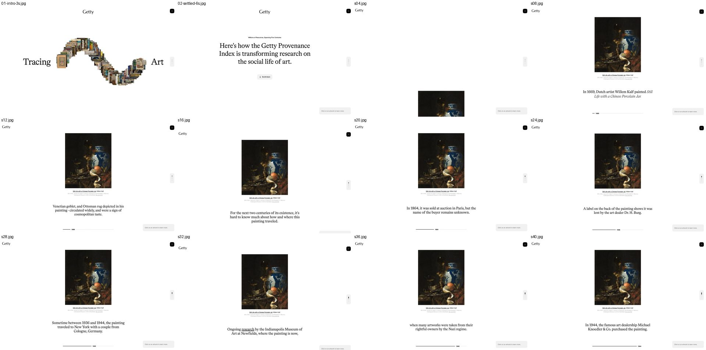
Borrowed: objects strung along a moving path that the reader follows from origin to outcome. NUMEK’s objects are real Adult rows.
captured · 13 frames
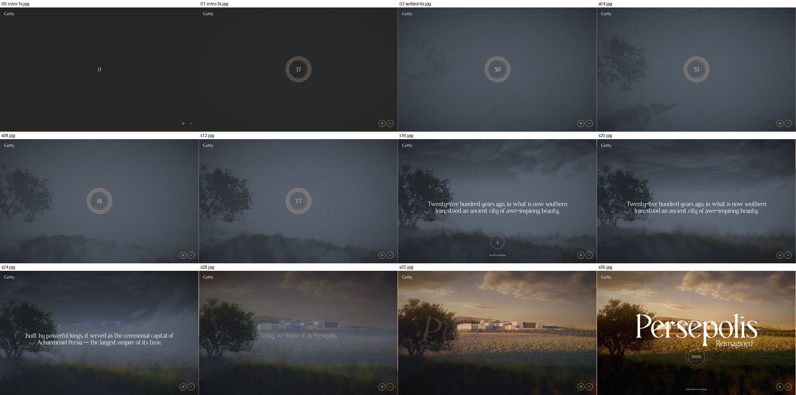
Borrowed: a pinned, chaptered scroll where each step stages one object and one sentence.
captured · 12 frames
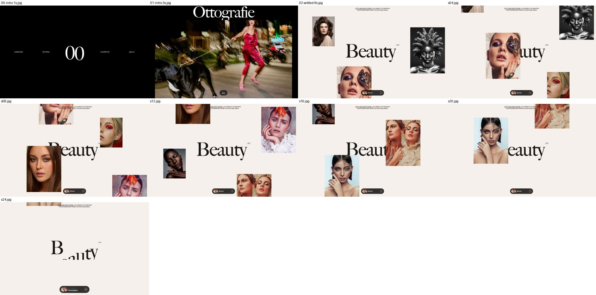
Borrowed: restraint — a quiet ground that lets one object at a time carry the page.
captured · 9 frames
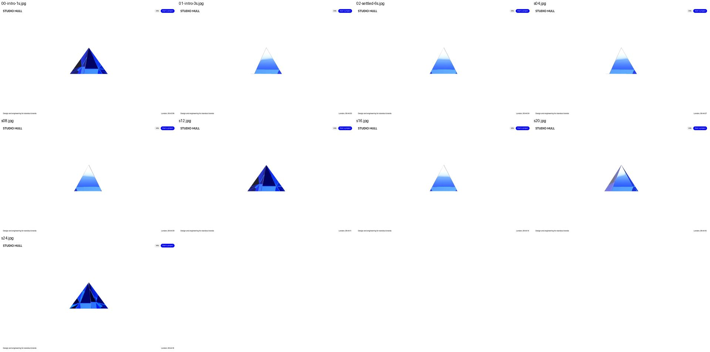
Borrowed: small, exact interface chrome around large imagery.
captured · 9 frames07 Collection
Each column of a dataset is an object, shaped by its real distribution.

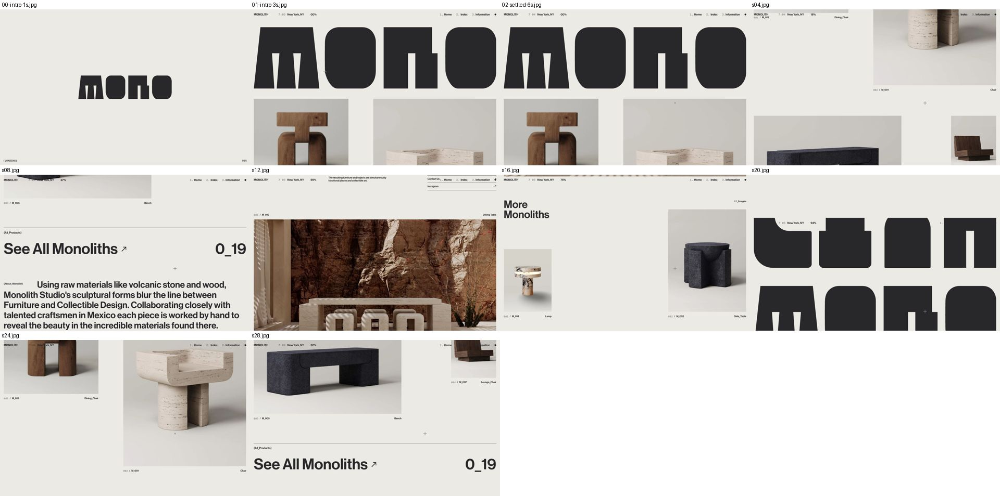
Borrowed: the catalogue of objects on plinths, a page-wide wordmark, and a header that reports time, place and scroll position.
captured · 10 frames
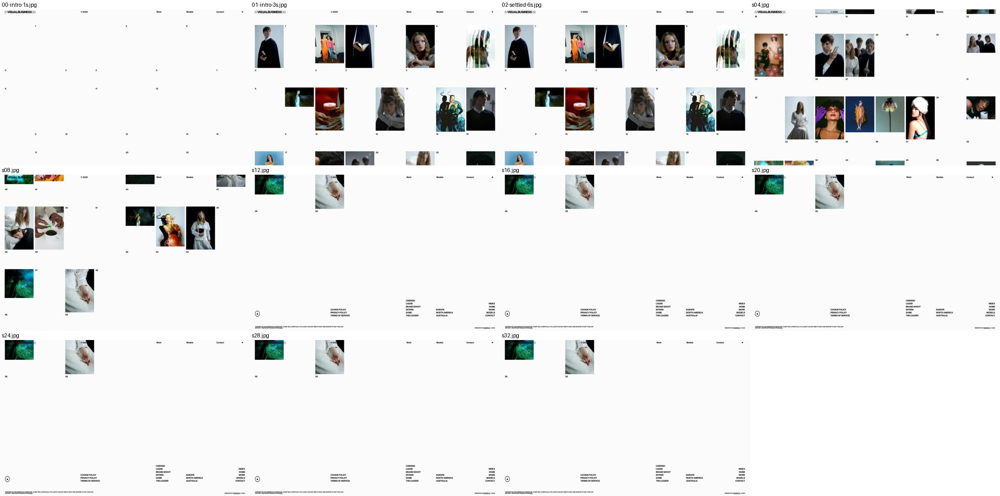
Borrowed: a dense, even grid of numbered objects.
captured · 11 frames
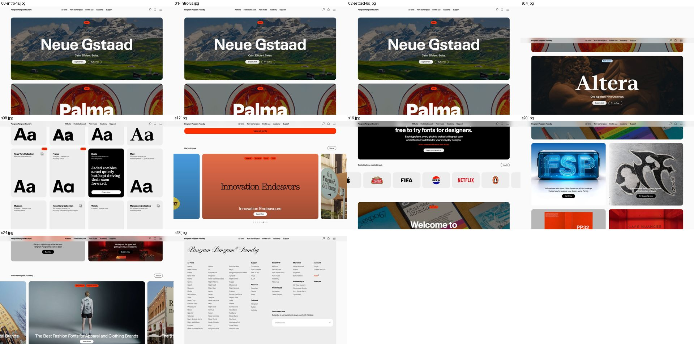
Borrowed: specimen-style spreads — one large subject beside a compact table of its properties.
captured · 10 frames08 Modules
DataTrust as fourteen live, colour-coded modules that open into chapters.

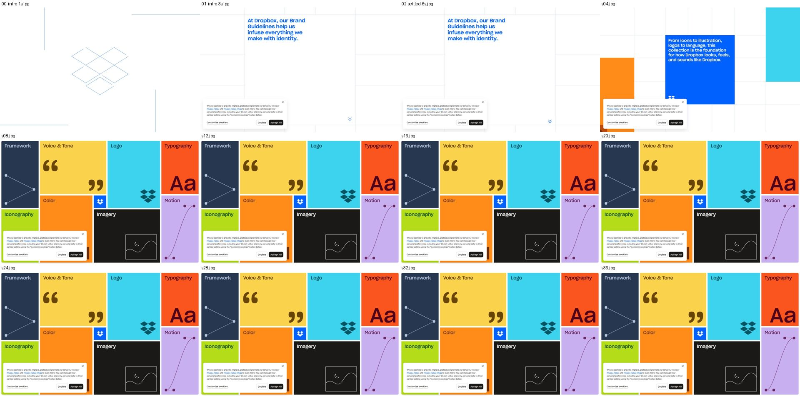
Borrowed: an index built as a mosaic of colour tiles, each holding a small drawing of its section and opening into it. NUMEK uses its own grid, palette and drawings made from data.
captured · 12 frames (cookie banner visible)
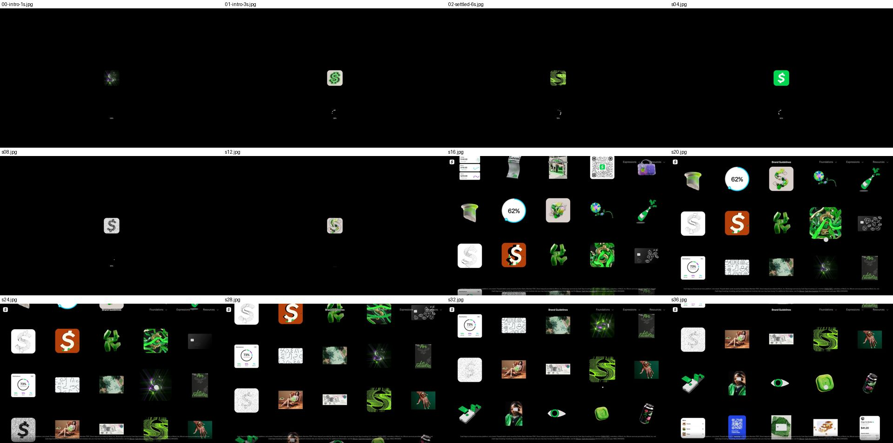
Borrowed: a field of self-contained items that each expand into their own story.
captured · 12 frames
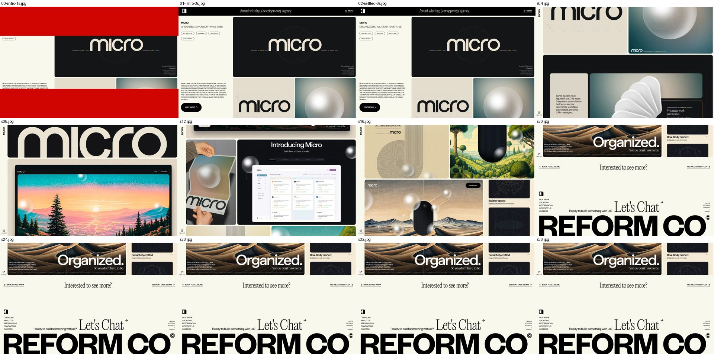
Borrowed: confident blocks of flat colour with large grotesque type.
captured · 12 frames
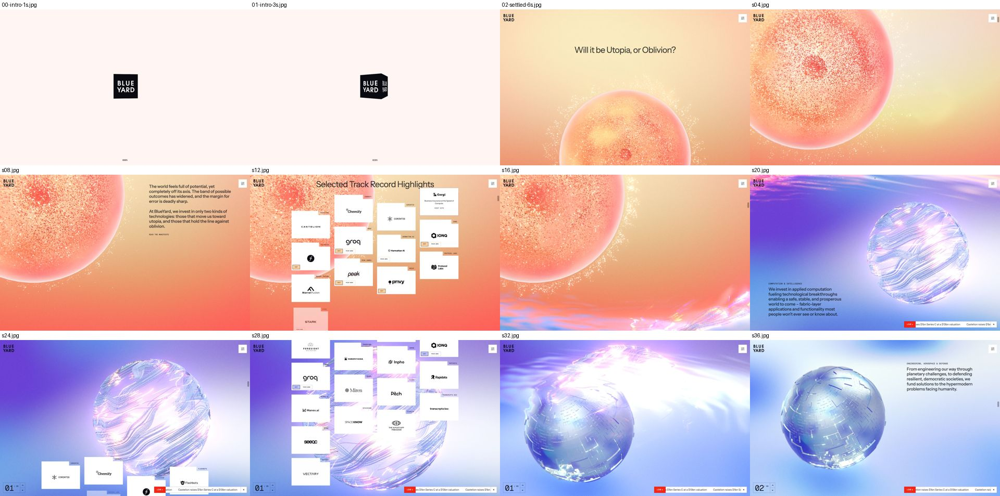
Borrowed: a ledger-like list as a calm counterweight to the visual index.
captured · 12 frames09 Product Camera
The DataTrust interface rendered as live DOM, filmed by a scroll-driven camera.

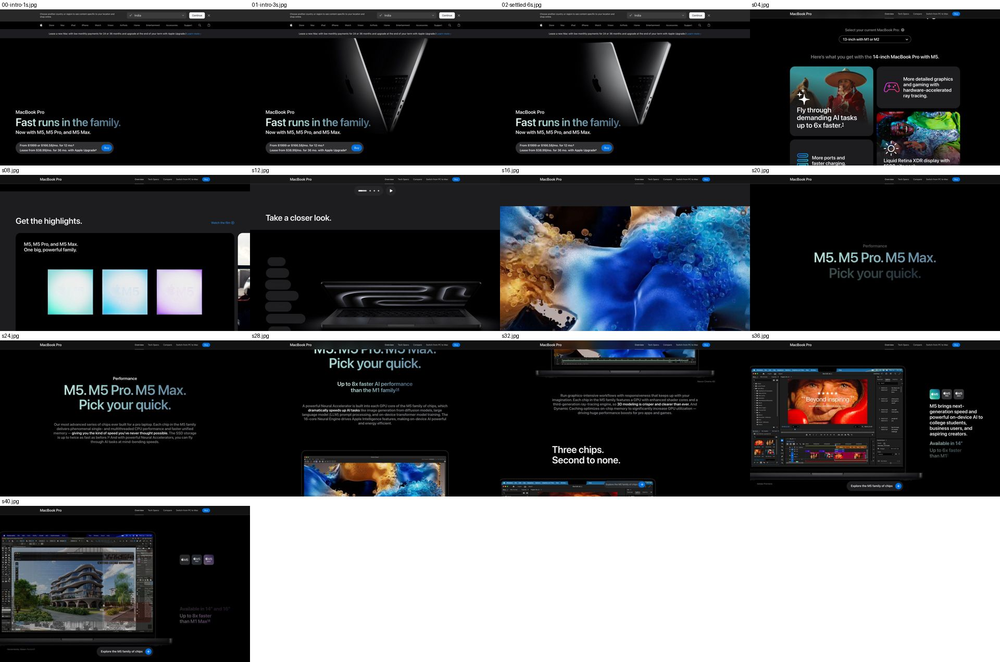
Borrowed: the product on a dark stage, revealed by scroll, with short captions doing the talking.
captured · 13 frames (region banner visible)
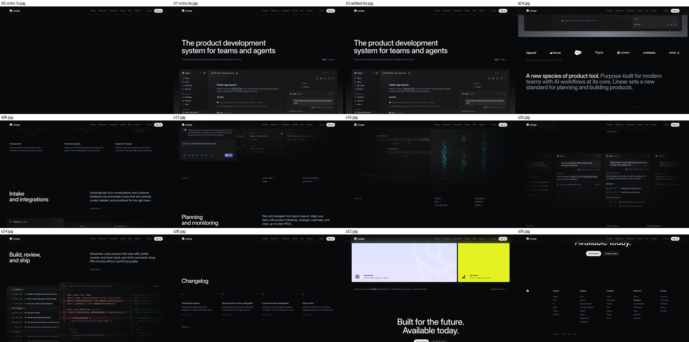
Borrowed: the real interface, at full fidelity, as the hero image.
captured · 12 frames
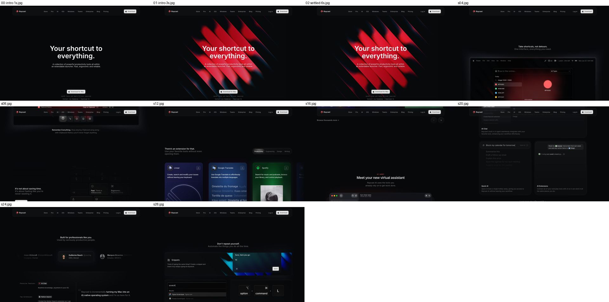
Borrowed: crisp dark product chrome and a mono accent for technical detail.
captured · 10 frames
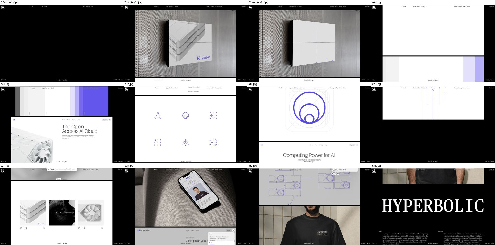
Borrowed: an interface shown in context, then cropped close for detail.
captured · 12 frames10 Lexicon
Nine words for what goes wrong in data, each set huge with real evidence drifting past.

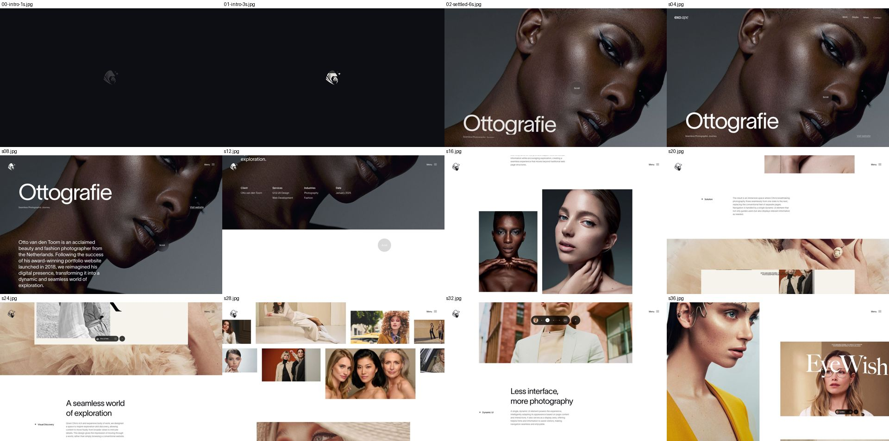
Borrowed: pieces at different depths drifting past a large title, and one floating control for navigation. NUMEK’s pieces are evidence, not photographs.
captured · 12 frames
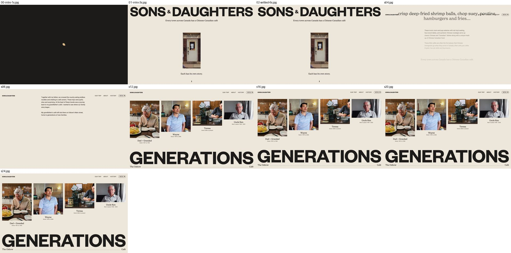
Borrowed: an expressive serif used very large on a dark ground.
captured · 9 frames
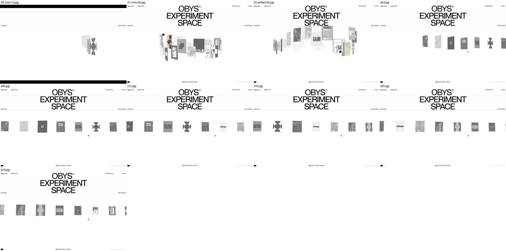
Borrowed: type that responds to scroll — here, each word gains weight as you read it.
captured · 9 frames
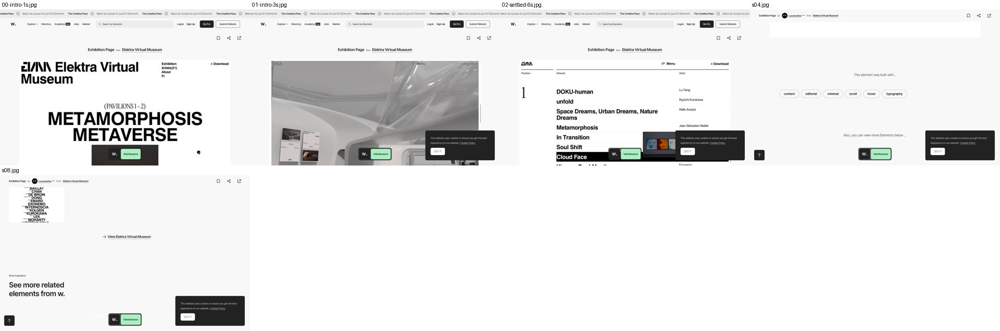
Borrowed: an index presented as a list of large words.
partial · 5 frames of the Awwwards page, not the original siteHonest notes
- All captures ran in headless Chromium with software rendering. WebGL-heavy pages may move more smoothly in a real browser than the recordings suggest.
- The Elektra reference was seen only through Awwwards’ exhibition-page inspiration page; this lab did not inspect the original site.
- oryzo.ai, from the same library, timed out after seven frames and has no metadata file; it informed nothing here.
- Cookie and region banners in some frames are left as captured.
- Product-design references (Linear, Raycast) are secondary: they informed one direction’s interface chrome, not its idea.